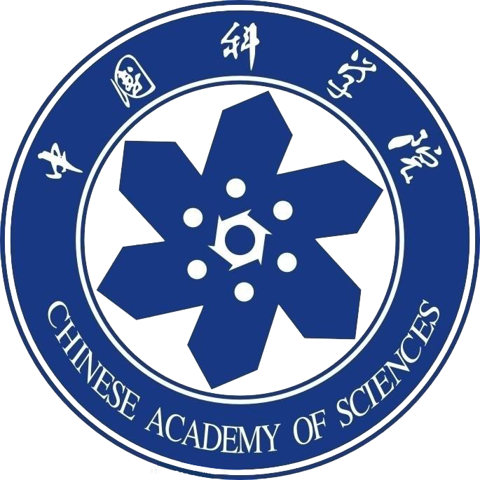
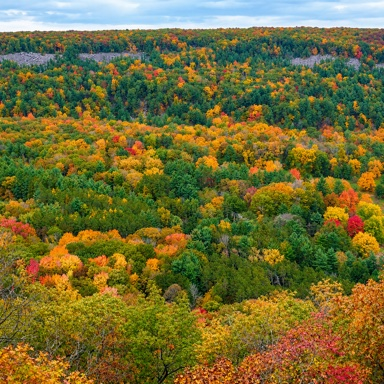
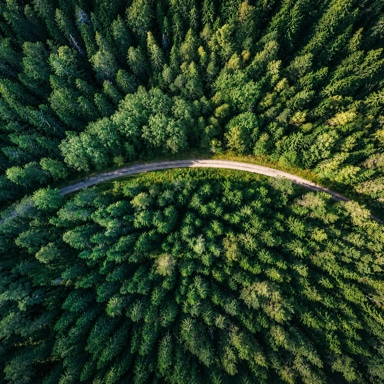
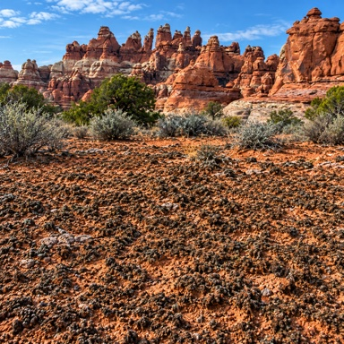
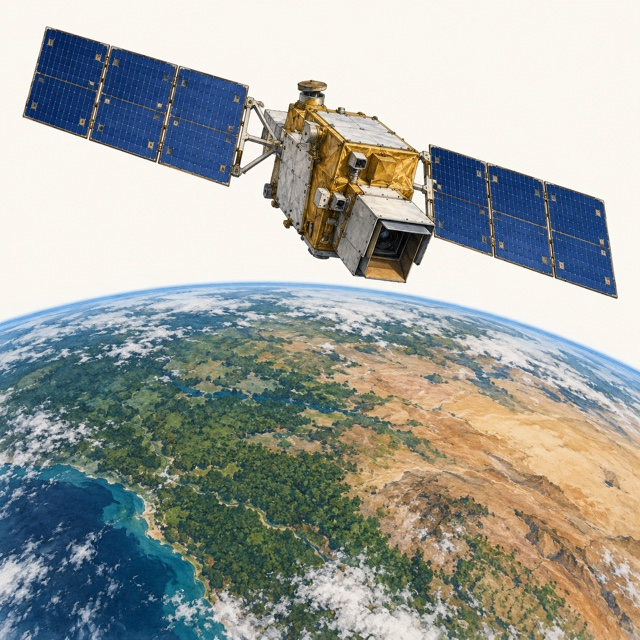
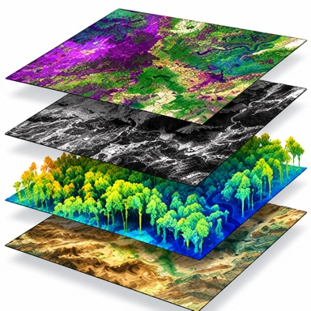
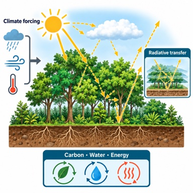

About me
-
Plant functional traits and diversity
What drives variation in plant traits across space and time, and how does it shape ecosystem function?
-
Forest fragmentation and functional integrity
How does forest fragmentation alter plant traits, functional diversity, and ecosystem function?
-
Dryland biocrusts and climate feedbacks
How do climate change and disturbance reshape biocrust communities, and how do these changes feed back to climate?
I'm Fujiang Ji, a postdoctoral associate at the University of Arizona's School of Natural Resources and the Environment, working with Prof. William Smith on NASA's EMIT project. I use hyperspectral and multiscale remote sensing to study plant and soil community composition and functional diversity across the Colorado Plateau and global drylands, with a particular focus on biological soil crusts.
I received my Ph.D. from the University of Wisconsin–Madison, where I worked with Prof. Min Chen on plant functional trait estimation at leaf and canopy scales and remote sensing data fusion using deep learning. I previously earned a master's degree in Cartography and Geographic Information System from the Aerospace Information Research Institute, Chinese Academy of Sciences, and a bachelor's degree in Remote Sensing Science and Technology from Chengdu University of Technology.
What is my research about?
How do climate change and human disturbance reshape ecosystem function?


Experience
-
University of Arizona
School of Natural Resources and the Environment
Postdoctoral Research Associate
-
University of Wisconsin–Madison
Department of Forest and Wildlife Ecology
Research Associate (unpaid appointment)
-
University of Wisconsin–Madison
Department of Forest and Wildlife Ecology
Research Assistant
Education
-
University of Wisconsin–Madison
Department of Forest and Wildlife Ecology
Ph.D. in Forestry
-

Chinese Academy of Sciences
Aerospace Information Research Institute
M.Sc. in Cartography and Geographic Information System
-
Chengdu University of Technology
College of Earth Science
B.Eng. in Remote Sensing Science and Technology
News & milestones
-
Our paper in Nature Communications reveals a 24 million km decline in global forest edge length from 2000–2020, with episodic changes closely tracking policy-driven land management.
Read paper -
Our paper in Communications Earth & Environment provides experimental evidence that biocrust degradation can amplify climate warming across global drylands.
Read paper -
Received the University of Arizona’s Postdoctoral Research Development Grant and was named a Sursum Fellow.
Details -
Received the Annual Best Ph.D. Dissertation Award in Forestry Ecology at the University of Wisconsin–Madison.
Details -
Gave an invited NASA ARID seminar on plant functional trait dynamics across spatial, temporal, and biological scales using hyperspectral observations.
-
Our paper in Remote Sensing of Environment uses deep learning to combine EMIT and PlanetScope observations and reconstruct high-resolution hyperspectral imagery.
Read paper -
Officially joined the Ecosystem Climate Dynamics (ECD) Lab, led by Prof. William Smith at the University of Arizona, as a postdoctoral associate.
Lab website -
Presented our latest research at the AGU Annual Meeting 2025 in New Orleans.
-
I led a study in Remote Sensing of Environment tracking seasonal plant trait variability across forest types and ecoregions using satellite and airborne spectroscopy.
Read paper -
Successfully defended my Ph.D. dissertation on estimating plant functional traits across multiple scales using hyperspectral observations.
Details -
Gave a talk at NASA’s EMIT science meeting on hyperspectral reconstruction for mapping plant functional traits in fine detail.
-
I led a study in Remote Sensing of Environment showing how transfer learning improves leaf trait prediction across ecosystems.
Read paper -
Received the Joon Lee Award from the University of Wisconsin–Madison’s Department of Forest and Wildlife Ecology for outstanding academic performance.
Details -
Presented our research on seasonal plant trait variation across NEON sites at AGU 2024.
-
Our paper in Earth’s Future, led by Fa, projects large fires in the western US using the hybrid physical–machine learning model AttentionFire v2.0.
Read paper -
Participated in UW–Madison’s Three Minute Thesis competition with “Eyes in the sky: Decoding plant functional traits with imaging spectroscopy.”
-
Our paper in Remote Sensing of Environment, led by Haoran, shows that hotspot NIRvP observations correlate more strongly with gross primary productivity than nadir observations.
Read paper -
I led a New Phytologist study examining the transferability of leaf trait prediction models using a comprehensive global dataset.
Read paper -
Received the annual Thomas O’Brien Award from the University of Wisconsin–Madison’s Department of Forest and Wildlife Ecology.
Details -
Presented our research at the Bryson Scholarship Poster Session at UW–Madison.
View poster -
Our paper “Structural complexity biases vegetation greenness measures” was published in Nature Ecology & Evolution.
Read paper -
Presented our research at AGU 2022 in Chicago.
View poster -
Joined Prof. Min Chen’s Global Change Research Laboratory in the Department of Forest and Wildlife Ecology at the University of Wisconsin–Madison.
-
Successfully defended my master’s thesis on estimating crop yield by integrating crop growth models with remote sensing data assimilation.
-
Our paper in IEEE Transactions on Geoscience and Remote Sensing estimates field-scale crop yield by assimilating Sentinel-2 observations into a coupled crop model.
Read paper
Research themes & approaches
Research themes
The questions I investigate
-

Plant Functional Traits & Diversity
Map how plant traits and functional diversity vary across seasons, ecosystems, and spatial scales.
Explore research -

Forest Fragmentation & Ecosystem Function
Investigate how forest edges and fragmentation reshape plant traits, functional diversity, and ecosystem function.
Explore research -

Dryland Biocrusts & Climate Feedbacks
Map biocrust cover, composition, and function to understand dryland responses to climate change and disturbance.
Explore research
Approaches
The tools and methods I use
-

Imaging Spectroscopy & Multiscale Remote Sensing
Connect field, drone, airborne, and satellite spectroscopy to observe plant and soil communities across scales.
View study -

Data Fusion & Machine Learning
Combine hyperspectral and high-resolution imagery with machine learning to reconstruct spectra and predict ecological traits.
View study -

Radiative Transfer & Process-based Modeling
Integrate radiative transfer, process-based models, and data assimilation to estimate plant traits and crop productivity.
View study
Honors & awards
- 2026
- 2026
-
2025
Annual Joon Lee Award
Department of Forest & Wildlife Ecology, University of Wisconsin-Madison
Details -
2024
Annual Thomas O'Brien Award
Department of Forest & Wildlife Ecology, University of Wisconsin-Madison
Details - 2020
-
2020
Postgraduate Student Scholarship
University of Chinese Academy of Sciences
- 2018
-
2017
First Prize of the 6th National College Student GIS Application Skills Competition
Details -
2017
Excellent Graduates of Sichuan Province, China
Details -
2016 & 2017
Excellent Student
Chengdu University of Technology
-
2015
National Encouragement Scholarship
Research projects
-
2026–present OngoingNASA-funded project
NASA Earth Surface Mineral Dust Source Investigation (EMIT) – Dryland Ecosystem Mapping with Multiscale Hyperspectral Remote Sensing
Research focus: Mapping plant and soil community composition and functional diversity across the Colorado Plateau and global drylands.
My contribution: Integrating NASA EMIT with drone, airborne, and satellite observations to develop maps of biocrust cover, community composition, and function.
Hide details
Participation period: January 2026 – present
Integrating hyperspectral observations from NASA's EMIT platform with complementary drone-, aircraft- (GEMx), and satellite-scale (EnMAP, PACE) datasets to map dryland plant and soil community composition and functional diversity across the Colorado Plateau and global drylands. A key focus is developing novel maps of biological soil crust (biocrust) cover, community composition, and function — photosynthetic soil surface communities of cyanobacteria, mosses, and lichens that play critical roles in soil stabilization, fertility, water cycling, and carbon exchange. Collaborating with the NASA EMIT Science and Applications Team and researchers at the U.S. Geological Survey.
-
2024–2025NASA-funded project
Advance spaceborne mapping of plant functional traits with high-resolution and hyperspectral data over sparse vegetation canopies (80NSSC24K0054)
Research focus: Repeatable mapping of plant functional traits in sparsely vegetated landscapes.
My contribution: Proposed a data-fusion framework combining PlanetScope with DESIS or EMIT observations.
Hide details
Participation period: March 2024 – December 2025
Developed a data fusion framework to enable large-scale, repeatable mapping of plant functional traits in sparsely vegetated areas by combining PlanetScope imagery with DESIS or EMIT imaging spectroscopy.
-
2021–2024
Monitoring and understanding seasonal variations of forest functional traits and diversity by integrating observations from multi-source RS data
Research focus: Understanding how forest traits and functional diversity change across seasons and ecosystems.
My contribution: Combining PRISMA, NEON airborne data, and field measurements with empirical, physical, and hybrid models.
Hide details
Participation period: September 2021 – December 2024
Combined PRISMA imaging spectroscopy, NEON AOP observations, field measurements of leaf spectra and traits, and empirical, physical, and hybrid models to investigate how plant functional traits vary through the growing season and across forest ecosystems.
Earlier projects
-
2020
“Big Earth Data” Science Engineering Project of Chinese Academy of Sciences (CASEarth) – Big Earth Data Supports the U.N. Sustainable Development Goals (SDGs)
My contribution: Produced a 2000–2019 farmland productivity dataset for Northeast Eurasia and bilingual SDG 2.4 documentation.
Hide details
Participation period: 2020
Produced the 2000-2019 farmland productivity dataset in Northeast Eurasia by using the crop growth model through the JavaScript API interface of the Google Earth Engine platform; wrote the SDG 2.4 documents in both Chinese and English.
-
2019–2020
The STS (Science and Technology Service Network Initiative) Program of Chinese Academy of Sciences (KFJ-EW-STS-069)
My contribution: Conducted field campaigns and remote sensing monitoring of crop conditions, biomass, soil nutrients, and yield.
Hide details
Participation period: 2019–2020
Conducted field campaigns and remote sensing monitoring to assess crop physiology, biochemistry, condition, biomass, soil nutrients, and yield. Organized monthly project meetings and drafted progress reports.
-
2018–2019
China High-resolution EO System – Quantitative Retrieval Technology of Vegetation Parameters from GF-6 WFV Satellite Image (30-Y20A03-9003-17/18-05)
My contribution: Implemented crop-model and data-assimilation workflows in IDL to estimate crop yields from GF-6 observations in Xinjiang.
Hide details
Participation period: 2018–2019
Used GF-6 WFV observations to estimate crop yield in the Xinjiang study area, integrating crop growth modeling and data assimilation in IDL.
-
2018–2019
Precision Insurance of Wheat Based on Spatial Big Data
My contribution: Assimilated time-series remote sensing into crop models for yield estimation, crop-damage assessment, and a wheat insurance system.
Hide details
Participation period: 2018–2019
Assimilated time-series remote sensing observations into crop growth models to estimate yield and assess crop damage, and developed a technical framework for wheat insurance.
-
2017–2018
National College Students' innovation and entrepreneurship training program (Grant No. 201710616032)
My contribution: Led a student research project on estimating rice growth parameters from hyperspectral data.
Hide details
Participation period: 2017–2018
Inversion and Detection of Parameter of the Growing Status of Rice based on Hyperspectral Data.
-
2016
Research on technologies used to demarcate red-line areas of ecology in major districts and counties of Sichuan Province, China, initiated by a professor in the department
My contribution: Supported a faculty-initiated project on ecological red-line delineation in Sichuan Province.
Hide details
Participation period: September–December 2016
Professional service
-
Conference organization
Session Convener and Chair
2026 · AGU Annual Meeting
-
Proposal review
Proposal Review Panelist
2026 · NASA research proposals
-
Journal peer review
- Remote Sensing of Environment
- Agricultural and Forest Meteorology
- Earth System Science Data
- Remote Sensing
- IEEE Transactions on Geoscience and Remote Sensing
- Science of the Total Environment
- Frontiers of Earth Science
Organizations
Technical skills
-
Programming languages
-
Scientific computing
-
GIS & remote sensing
-
Ecosystem & crop models
-
Radiative transfer models
-
Field instrumentation